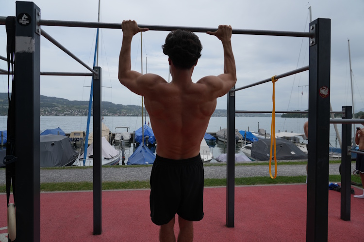

Der Klimmzug (Pull-Up) ist die ultimative Oberkörper-Übung im Calisthenics. Er baut einen starken Rücken, massive Oberarme und eine eiserne Griffkraft auf. Doch für viele Anfänger wirkt die Stange anfangs wie eine unüberwindbare Wand. Die gute Nachricht: Mit den richtigen Vorübungen kann absolut jeder den Klimmzug lernen. Es ist reine Kopfsache und eine Frage der richtigen Progressionen!
"Es ist völlig egal, wo du heute startest. Wichtig ist nur, dass du die Stange nicht loslässt."
Wenn du noch keinen freien Klimmzug schaffst, solltest du dein Training in folgende 4 Schritte unterteilen und dich Woche für Woche steigern:
Schritt 1: Aktivierung der Schultern (Scapula Pull-Ups)
Ein häufiger Fehler ist es, rein aus den Armen ziehen zu wollen. Die Kraft kommt jedoch primär aus dem oberen Rücken. Hänge dich an die Stange und ziehe nur deine Schulterblätter nach unten und hinten, ohne die Arme zu beugen. Halte die Spannung kurz und lasse dich wieder locker hängen. Das stärkt die wichtige Schulterblatt-Muskulatur.
Schritt 2: Die Schräglage (Australian Pull-Ups / Rows)
Such dir eine niedrigere Stange auf Hüfthöhe oder hänge Turnringe auf. Platziere deine Füße auf dem Boden, lehne dich nach hinten und ziehe deine Brust an die Stange. Je aufrechter du stehst, desto leichter ist es. Je flacher du unter der Stange liegst, desto schwerer wird die Übung. Perfekt, um die grundlegende Zugkraft aufzubauen!

Schritt 3: Das Geheimnis der Schwerkraft (Negative Klimmzüge)
Unsere Muskeln sind in der herablassenden (exzentrischen) Bewegung deutlich stärker als beim Hochziehen. Nutze eine Erhöhung oder springe an der Stange vorbei, bis dein Kinn über der Stange ist. Versuche nun, dich so langsam und kontrolliert wie möglich (ca. 4 bis 6 Sekunden lang) nach unten gleiten zu lassen, bis deine Arme komplett gestreckt sind.
Schritt 4: Unterstützung durch Bänder (Banded Pull-Ups)
Widerstandsbänder (Resistance Bands) sind der perfekte Übergang zum freien Klimmzug. Hänge ein Band in die Stange und steige mit einem Fuß hinein. Das Band nimmt dir am schwersten Punkt (ganz unten) das meiste Gewicht ab und hilft dir dabei, den vollen Bewegungsumfang sauber auszuführen.
Fazit und dein Trainingsplan
Trainiere diese Übungen 2- bis 3-mal pro Woche. Sobald du 3 Sätze à 8 saubere negative Klimmzüge schaffst oder mit einem dünnen Widerstandsband problemlos hochkommst, ist dein erster freier Klimmzug nur noch ein paar Trainingseinheiten entfernt. Bleib dran!